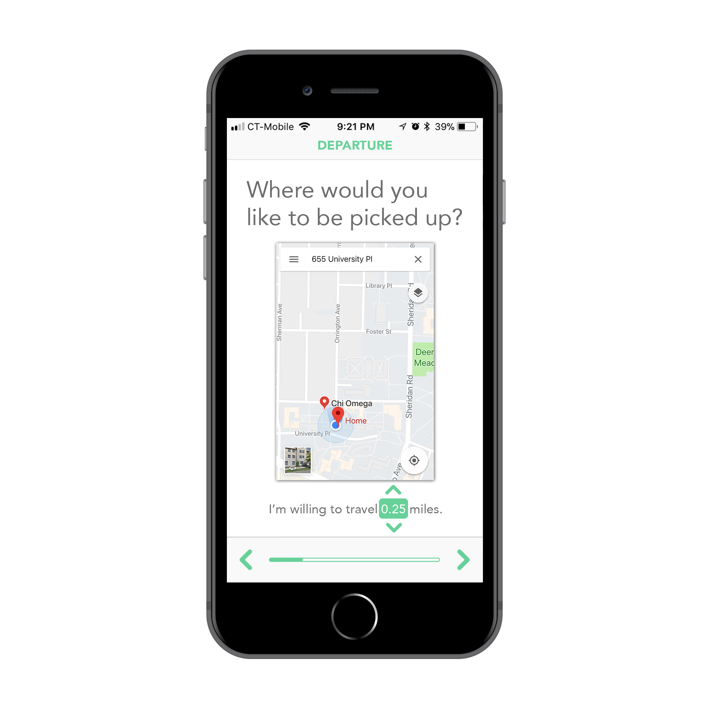
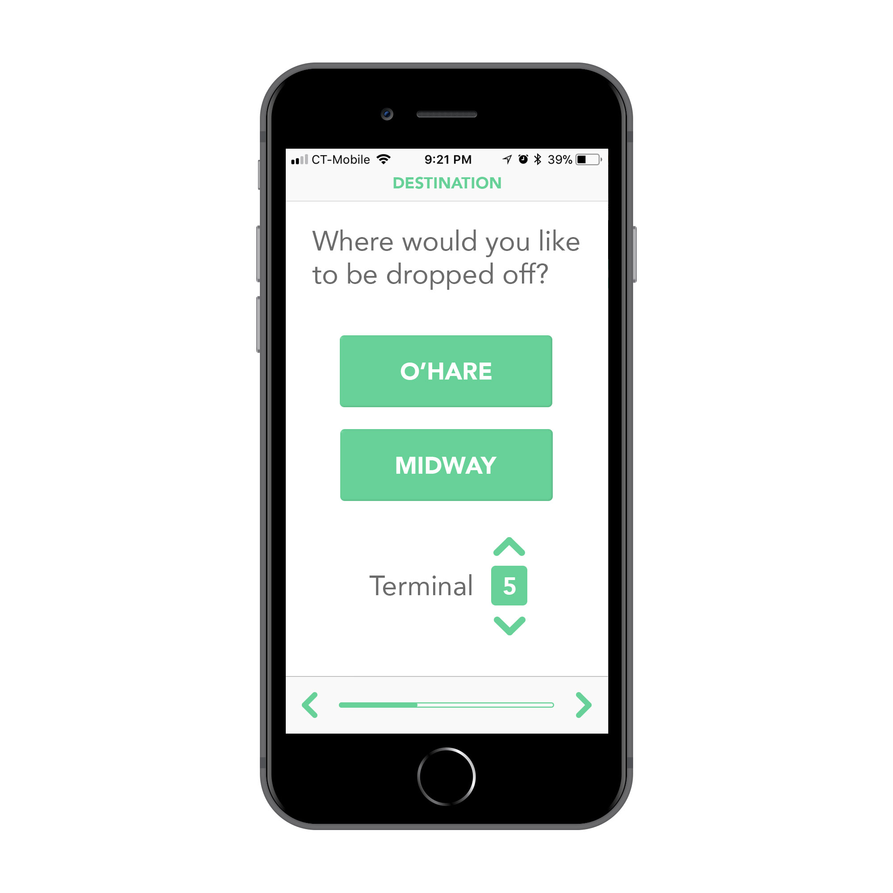

Ivy

I’m Amy Yang, a student at Northwestern University studying Communication and Computer Science. In my free time I read (everything), write (creative nonfiction), and learn German (hallo!). On this website you can find my résumé, an art portfolio, and a small writing portfolio.
I am interested in using my skills in programming and design to create products that are meaningful to human life. Get in touch if you would like to work with me, hire me, or just say hello!
Email: ay2228 ( at ) hotmail.com
LinkedInI’m currently a sophomore at Northwestern, and I am looking for an internship in the IT industry in the summer of 2019. Skills wise, I have learned and done projects with C++, Racket (educational Lisp), HTML, CSS, and JavaScript; I also have some knowledge of GitHub, UNIX, as well as Bootstrap, which I used to build this website. For more details, download my résumé below:
DownloadClick on the images for a better view, including close-ups of the art pieces!

I photographed discarded flowers from a flower market.
This photo received a Scholastic Art & Writing Silver Key award, so that technically makes me an award-winning cat photographer! 😸

A mixed media piece inspired by the MTA. Winner of the Scholastic Art & Writing Silver Key award in the mixed media category.


I designed these mock-ups for a ride-sharing app that my friend and I pitched in the 2018 Improve NU contest. The app would connect students who are traveling to the airport at the same time so they could share a ride.
 
I designed a poster advertising the Shanghai Student Film Festival in my high school.

This is a small writing portfolio I compiled consisting of a personal essay, a poem, and a satire piece. For more of my writing, visit my profile at North by Northwestern.
“When people know your origin, they form certain expectations about you. I, however, did not grow up in the same culture as most other Chinese international students who were born and raised in the country.”
“Sometimes the boundless water that divides
us doesn’t really feel like such a long way.”
“I also work very hard. I have a 4.0. Some people ask me, why do you work so hard? Well, I enjoy smiling smugly when I tell people that I have a 4.0, like I am doing right now.”